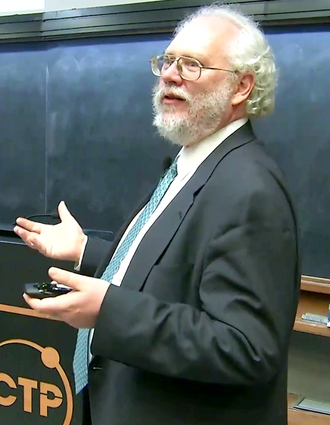

Quantum computing has its roots in both quantum mechanics and computer science. Over the decades, it has evolved from theoretical musings to experimental reality, with major breakthroughs leading us closer to practical quantum computers.
Early Theoretical Foundations (1900s - 1980s)
Quantum Mechanics (1900-1930s)
- The foundation of quantum computing lies in quantum mechanics, which emerged in the early 20th century through the work of scientists like Max Planck, Albert Einstein, Niels Bohr, Werner Heisenberg, and Erwin Schrödinger.
- Key principles such as superposition and entanglement were established, setting the stage for quantum computation.
Turing and Classical Computation (1930s - 1940s)
- In 1936, Alan Turing introduced the Turing Machine, formalizing the concept of classical computation.
- Around the same time, John von Neumann laid the groundwork for modern digital computing.
First Mentions of Quantum Computation (1970s - 1980s)
- In the early 1970s, Stephen Wiesner proposed using quantum mechanics for cryptography.
- In 1981, Richard Feynman suggested that classical computers struggle to simulate quantum systems efficiently and proposed the idea of using quantum systems for computation.
- In 1985, David Deutsch formulated the concept of a universal quantum computer, capable of simulating any physical system.
The Birth of Quantum Algorithms (1990s - Early 2000s)
Shor’s Algorithm (1994)
- Peter Shor developed an algorithm that could factor large numbers exponentially faster than classical computers.
- This breakthrough threatened classical cryptography (RSA encryption) and fueled serious interest in quantum computing.

Grover’s Algorithm (1996)
- Lov Grover devised a quantum search algorithm that could speed up database searches significantly.
Experimental Progress (1990s - Early 2000s)
- In 1998, the first 2-qubit quantum computer was built using nuclear magnetic resonance (NMR).
- By the early 2000s, researchers created small quantum processors with a few qubits, though they were limited by noise and decoherence.
The Era of Noisy Quantum Computers (2010s - 2019)
Rise of Superconducting Qubits and Quantum Processors
- Google, IBM, and Rigetti pioneered superconducting qubits, making quantum computers more stable.
- IBM introduced Quantum Experience (2016), allowing cloud-based access to quantum processors.
Quantum Supremacy (2019)
- Google’s Sycamore processor performed a specific task in 200 seconds that would take classical supercomputers thousands of years, marking a major milestone.